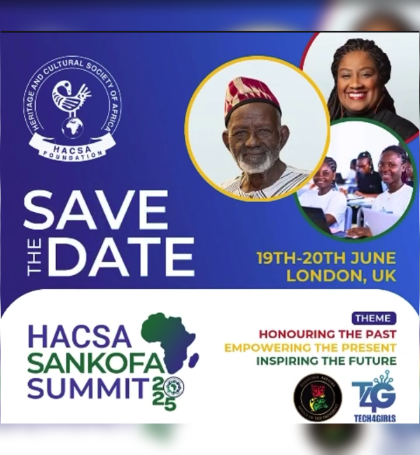
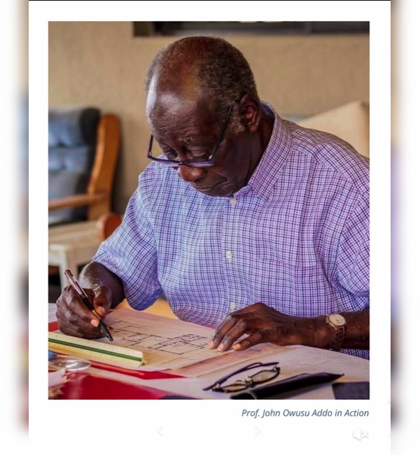

I’m Siabi Kafui but you can call me the Brand Storyteller. Words listen to me and I make them work for you. I turn big, messy ideas into clear stories people actually understand and act on. Your brand speaks and I make people lean in and listen.
About
I’m the Brand Storytelling Girl. I give voice to the people and ideas that deserve to be heard. With over five years of experience across logistics, automobiles, health, advertising, NGOs, and the newspaper industry, I’ve learned one thing: communication isn’t about saying more, it’s about saying it right. After all, what’s the point of a brilliant initiative if it sounds like rocket science to everyone else? To me, communication is a lot like cooking jollof, everyone thinks they’ve mastered it, but only a few get the recipe just right. My work is making sure your message hits the spot every time. I also have a soft spot for impact stories, shining a light on the people and projects quietly changing lives in powerful ways. Outside of professional work, I wear another hat (okay, maybe a whole wardrobe) as the voice behind Literary Lens, my writing brand. On Substack, I share softer reflections. On Medium, I write for students and young professionals exploring communication. And on social media, Literary Lens is where I serve up quick, witty snapshots of words, culture, and storytelling. We’ve got a good thing going. Your story is waiting to be told, I’m here to make sure people listen.And trust me, words and I?
Download CVMY CAREER
You could say my career has been a road trip with stops in logistics, automobiles, health, advertising, NGOs, and the newspaper industry. Each stop gave me new tools for the same mission: making communication less about noise and more about meaning.Current Role
Communications Associate | The HACSA Foundation (2024–Present) Leading digital and traditional communications, building campaigns for initiatives like Tech4Girls and the HACSA Sankofa Summit, and supporting fundraising through strategic messaging and media engagement.
Experience
Career Compass Ghana
Personal Assistant
2024 - 2025
Managed high-level correspondence, reports, and schedules while liaising with stakeholders.
Oyoko Clinic
Social Media Manager
2022
Built the clinic’s digital presence and supported communication logistics.
Ghana Tourism Authority, WeGoo Delivery, Veritas Publics
Executive Assistant
2019 - 2021
Supported client services, stakeholder communication, and campaign development.
AutoShack Ghana
Executive Assistant
2022-2023
Combined executive support with social media management, crisis communication, and customer relations.
Business 24 Newspaper
Marketing Executive
2021 - 2022
Promoted the brand through market research, advertising proposals, and campaign execution.
Eastern FM
Reporter
2018
Researched, wrote, and presented news, strengthening my storytelling foundation.
COMMUNITY IMPACT
InkSpire Legacy Writers
At InkSpire, I communicate what we do to our audience — showing how writing workshops, school tours, and challenges are building confident young voices. My role is to make sure our impact doesn’t stay hidden in classrooms, but reaches parents, partners, and the wider community.
TravelTings
Here, communication takes a lighter twist — I craft stories that make people want to swap “maybe next year” for “let me book it now.” Travel planning may start with logistics, but through storytelling, it becomes an invitation to adventure, culture, and connection. That’s the narrative I help TravelTings bring to life.
Generation Shift Africa
With GenShift, I communicate what the movement is about in ways that resonate with young people — turning “just another initiative” into a community they want to be part of. My work helps draw youth on board, not through heavy jargon, but through stories that say: this is for you, and you belong here.
Recent Works
Here are some of my favorite projects I have done lately. Feel free to check them out.
-
InstagramAchieving the SDGS.
-
InstagramOritsé Williams
-
 InstagramHACSA SANKOFA SUMMIT
InstagramHACSA SANKOFA SUMMIT -
InstagramThe Wire shares lessons from decades of shaping global entertainment.
-
InstagramThe Sankofa bird is flying across the Atlantic and it’s landing in the UK
-
TiktokProf. John Owusu Addo: The architect behind timeless spaces
Achieving the SDGS.
Our young women are learning to code and opening doors out of poverty. Our young women are gaining confidence and thriving in STEM. Our young women are securing tech jobs and mentoring others. Our young women are building a future that stretches far beyond 2030.
- Branding
- Product Design
Oritsé Williams
We’re counting down to two unforgettable days of conversation, creativity and culture in the heart of London and we’re honoured to have @oritsemusic joining our Creative Arts panel.
- Branding
HACSA SANKOFA SUMMIT
Honouring the Past Empowering the Present Inspiring the Future
- Product Design
The Wire shares lessons from decades of shaping global entertainment.
Can Africa’s creativity power its future? From music and movies to fashion and festivals, the continent’s creative energy is unstoppable. But how do we turn that energy into jobs and real opportunities for millions? At the HACSA Sankofa Summit 2025,
- Website
The Sankofa bird is flying across the Atlantic and it’s landing in the UK
This June, we’re gathering thought leaders and changemakers from the African diaspora for the Sankofa Summit UK Edition. Expect powerful keynotes, panels, and networking sessions under the theme:”Honouring the Past, Empowering the Present, Inspiring the Future.
- Illustration
Prof. John Owusu Addo: The architect behind timeless spaces
Did you know Prof. John Owusu Addo is the designer behind The Cedi House in Accra and KNUST’s iconic Unity Hall? At 97, he has been awarded an Honorary Doctorate from the University of Westminster for his outstanding contributions to architecture....
- Branding
- Product Design
Get In Touch
I love to hear from you. Whether you have a question or just want to chat about design, tech & art — shoot me a message.